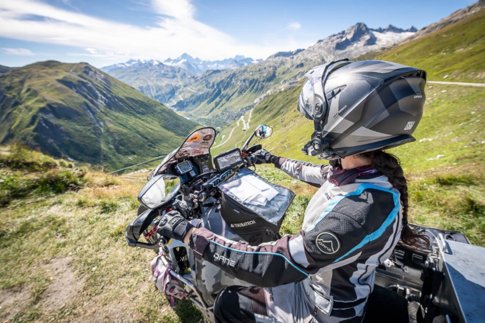
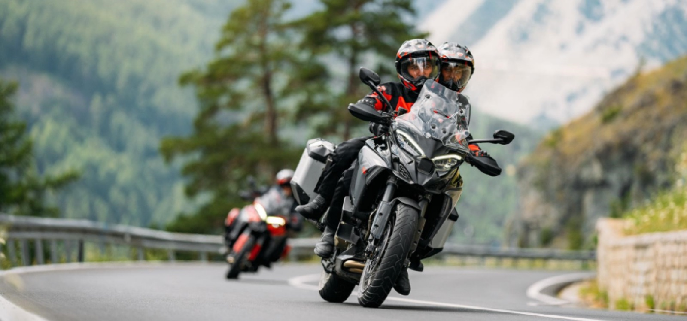
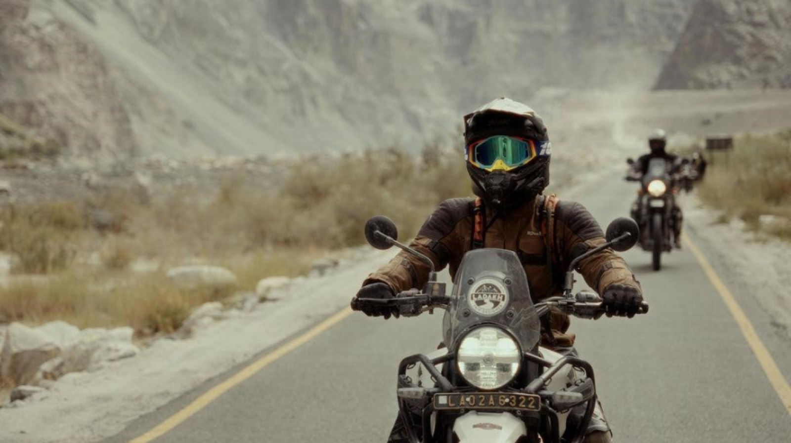
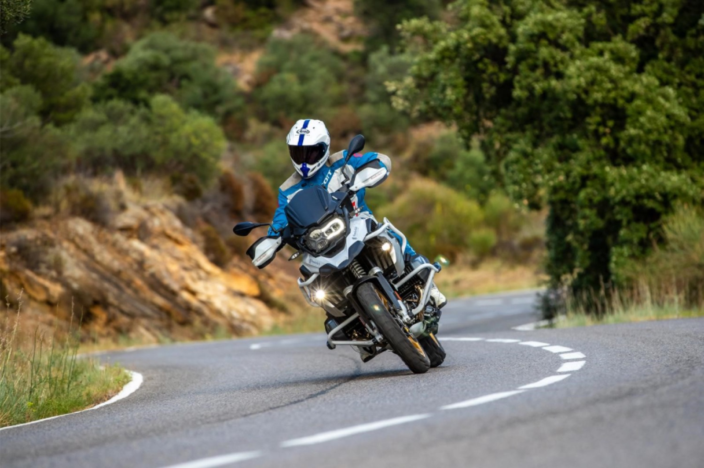

Riding in the Mountains: Tips for Safer Adventures on Two Wheels
Description
Planning a motorcycle ride through the mountains? Discover essential riding techniques, preparation tips, and safety practices to confidently navigate winding roads, changing weather, and challenging terrain while making every ride safer and more enjoyable.
Riding in the Mountains: Tips for Safer Adventures
Few riding experiences compare to the thrill of exploring mountain roads. Twisting corners, breathtaking landscapes, crisp mountain air, and panoramic viewpoints make every ride unforgettable. Whether you're riding through the Himalayas, the Western Ghats, or your favorite hill station, mountain roads promise adventure—but they also demand skill, preparation, and patience.
Unlike highways, mountain routes can change within minutes. Sharp hairpin bends, steep climbs, loose gravel, unpredictable weather, and limited visibility require riders to stay alert and adapt to constantly changing conditions. With the right preparation and riding techniques, you can confidently enjoy every climb, corner, and descent.
Prepare Before You Ride
A safe mountain adventure begins long before you start the engine. Since mountain roads place extra stress on both the rider and the motorcycle, it's essential to perform a thorough pre-ride inspection.
Check your tires, brakes, chain, engine oil, battery, lights, and coolant. Carry a basic toolkit, tire repair kit, portable air inflator, first-aid kit, and a power bank, especially if your route includes remote areas where service stations are limited.
Equally important is wearing the right riding gear. A certified full-face helmet, riding jacket, gloves, riding pants, and sturdy riding boots provide the protection needed for unpredictable mountain conditions. Pack waterproof clothing and warm layers, as temperatures can change rapidly even during summer.

Plan Your Route Wisely
Good planning with Rydyt, can make the difference between a smooth ride and an unexpected detour. Before leaving, review your route carefully, check weather forecasts, identify fuel stations, rest stops, and download offline maps in case mobile network coverage is unavailable.
Starting early in the morning gives you maximum daylight to tackle difficult sections safely while allowing extra time for breaks, photography, or unexpected delays. If severe weather is forecasted, consider adjusting your schedule instead of taking unnecessary risks.
Master Mountain Riding Techniques
Mountain roads reward smooth and controlled riding rather than speed. Approach corners at a comfortable pace, reduce speed before entering the turn, look toward the exit, and maintain a steady throttle throughout the corner.
Hairpin bends require extra patience. Shift into a lower gear before entering the turn, avoid sudden braking while leaning, and stay within your lane. On steep descents, rely on engine braking combined with gentle brake inputs instead of continuously applying the brakes, which can lead to brake fade during long downhill sections.
The smoother your inputs, the more stable and confident your motorcycle will feel.

Stay Alert to Changing Conditions
Mountain roads are full of surprises. Loose gravel, potholes, mud, falling rocks, water crossings, wildlife, and slow-moving vehicles can appear without warning. Weather conditions can also change rapidly, with clear skies turning into heavy rain or dense fog within minutes.
Always ride at a speed that allows you to react safely to unexpected hazards. If visibility becomes poor due to rain or fog, reduce your speed, increase your following distance, and stop at a safe location if necessary. Remember, arriving safely is always more important than arriving quickly.
Plan and Ride Better with Rydyt
Mountain rides often involve long distances, remote roads, and riders naturally spreading out through winding sections. Rydyt helps simplify these rides by combining route planning, live ride tracking, group location sharing, and rider communication in one platform.
Whether you're exploring with a few friends or leading a larger riding group, Rydyt helps everyone stay connected, making it easier to navigate unfamiliar roads, regroup safely, and ensure that no rider gets left behind.

Pack for Emergencies
Remote mountain routes may not always have immediate access to fuel stations, repair shops, or medical assistance. Carrying a few essential items can make a significant difference if something unexpected happens.
Your riding essentials should include:
- First-aid kit
- Tyre repair kit and portable inflator
- Multi-tool
- Power bank
- Flashlight
- Drinking water
- Energy snacks
- Emergency contact information
- Being prepared gives you greater confidence and peace of mind throughout your journey.

Final Thoughts
Mountain motorcycle rides offer some of the most rewarding experiences on two wheels, combining spectacular scenery with exciting riding challenges. The secret to enjoying them isn't speed—it's preparation, patience, and control.
By preparing your motorcycle, planning your route, using smooth riding techniques, and staying aware of changing road and weather conditions, you can enjoy every twist and turn with confidence. With smart planning and apps like Rydyt to keep your group connected, every mountain adventure becomes safer, smoother, and far more memorable.
Ride within your limits, respect nature and local communities, and let every mountain road become part of an unforgettable journey.
Invite. Ride. Track. Talk.
— The Rydyt Team